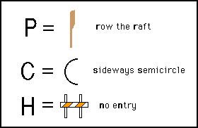

|
Use the diagram at the right to decode the sounds for the word below. This will help you understand why it's pronounced . You can click on an individual letter to hear its pronunciation in isolation. рестора́н Note: е is pronounced softer and shorter than normal because it's not the accented syllable. |
 |
| ↑ Restaurant - The Word |